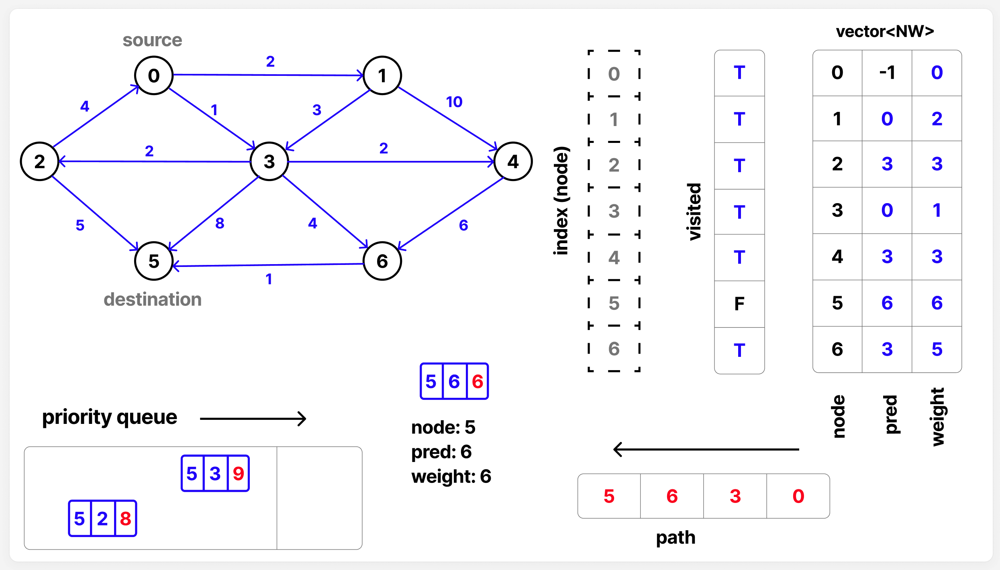

This Week’s Focus
This week we dive into the fascinating domain of graphs and graph algorithms. Graphs give us a way to model relationships, networks, routes, dependencies, and movement through a system.
Our goal is to become familiar with some of the most canonical graph problems and the algorithms designed to solve them efficiently.
Two Canonical Problems
Dijkstra’s Algorithm
Find the shortest weighted path in a graph. This is the classic route-optimization problem: given a starting point and edge weights, what is the cheapest or shortest way to reach a destination?
Ford-Fulkerson Method
Find the maximum flow through a network. This models situations such as bandwidth, traffic capacity, or any system where limited capacity moves through connected channels.
Together, these problems show why graphs matter: sometimes we care about the best path through a network, and sometimes we care about how much can move through it.
Final project: prj09 Graph Algos
You will solve both of these canonical problems, and more, as you implement graph algorithms from scratch.
Dijkstra in Action
The diagram below illustrates one step in working through Dijkstra’s algorithm: tracking visited nodes, predecessor information, tentative distances, and the next candidates in the priority queue.
